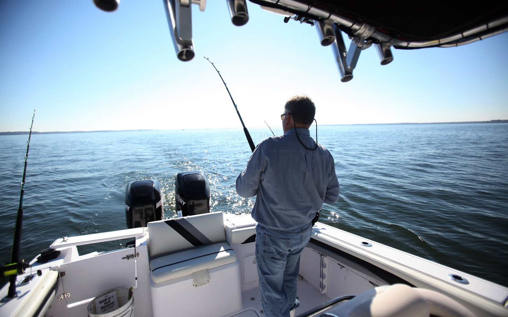

Welcome!
Docked in the Clearwater Municipal Marina on Clearwater Beach the AFL fishing fleet is
conveniently
located near the communities of Tampa and St. Petersburg on the gulf coast of Florida. Whether you want to
go out for a pleasant fishing session, want to buy gear or learn how to fish, the dedicated people over at A
Fisherman's Life will be more than happy to accommodate you. Specializing in teaching a variety of fishing
techniques, deep sea fishing tours and much more, the team over at AFL will make your day a great one.
Our Services
- Charters: Bring your friends and family on this fun-filled trip for one affordable price!
- Rentals: Want a boat for a few hours? Not a problem!
- Gear: Rods, bait, hats, boots, we have everything.
- Classes: Don't know how to fish? We got you!
Tip: Click and hold on image to zoom